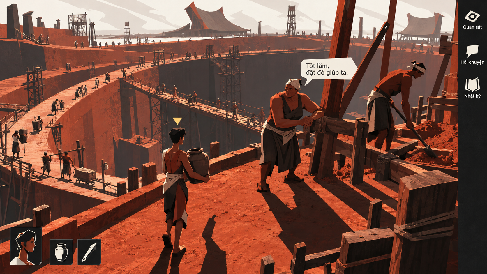

Sáu hướng độc lập thử đổi cả không gian, hình người, tỷ lệ, bối cảnh và giao diện. Mỗi ảnh là một màn hình chơi đề xuất, không phải ba cặp camera của cùng một phong cách.
Ảnh xem trước · Bổ sung thư viện tham khảo · Pending user approval
3D GÓC CẠNH / QUY MÔ LỚN
Đất dựng thành

Thử khối đất, nhịp công trình và người có dáng dài trong một không gian xây dựng; UI đứng thành dải gọn.
Ảnh đề xuất diện mạo game; cảnh và UI trong artwork là raster minh họa. Các nút trên trang chỉ phục vụ xem ảnh.
Chưa tải được ảnh. Kiểm tra thư mục assets của thử nghiệm 14.
Đang xem Đất dựng thành.
Đổi hướng bằng phím 1 / 2 / 3 / 4 / 5 / 6 hoặc các nút trên. Mở toàn khung hay PNG gốc để xem kỹ. Cỡ chữ trang xem chỉ đổi chữ HTML, không làm chữ trong ảnh reflow.
KHÔNG GIAN / HÌNH / NHÂN VẬT / UI
Thay cả cách nhìn và cách tạo hình.
Khối góc cạnh, mặt bằng hình học, khối mềm, đôi tay ở ngôi thứ nhất, thế giới ký hình và trang truyện là các câu hỏi khác nhau về cách biểu đạt cả game. Nhãn hướng mô tả ý định; cần đối chiếu output thực tế và phần còn thiếu.
Bối cảnh, cast, màu, camera và UI cùng thay đổi để mở rộng thư viện. Đây là so các tổ hợp, chưa thể quy sở thích cho một yếu tố riêng. Ảnh không chứng minh có model, camera, animation hay cơ chế gameplay mới.
01 · 3D GÓC CẠNH / QUY MÔ LỚN
Đất dựng thành
Thử khối đất, nhịp công trình và người có dáng dài trong một không gian xây dựng; UI đứng thành dải gọn.
Câu hỏi thử: Khối lớn và tỷ lệ có tạo được cảm giác sống trong một cộng đồng đang xây dựng, hay khiến người chỉ còn làm cảnh?
Quan sát bản này: Không gian thành đất và người góc cạnh đã hiện rõ; mặt đất/giàn giáo vẫn nhiều texture, lời gọi trong ảnh được generation thêm. Không phải phục dựng Cổ Loa.
02 · 2D NHÌN THẲNG TỪ TRÊN
Ô đất sống
Thử mặt bằng hình học, đường nước và các vùng làm việc với người/vật như những hình nhận được ngay.
Câu hỏi thử: Nhìn từ trên có còn giữ một người để nhập vai và tình huống đời thường, thay vì biến thành màn hình quản lý toàn tri?
Quan sát bản này: Ruộng muối và đường bờ dẫn cách đọc từ trên; người và vật vẫn có góc xiên/bóng và texture, chưa là planview hình học phẳng tuyệt đối.
03 · KHỐI MỀM / CAMERA CONG
Làng vòng cung
Thử khối tròn, tỷ lệ người phóng đại và cảnh đồi được diễn đạt bằng một cách nhìn cong.
Câu hỏi thử: Dáng mềm và không gian cong có đủ cá tính để kể chuyện trưởng thành? Camera cong là đề xuất biểu đạt, không phải hành tinh hay địa lý mới.
Quan sát bản này: Người và cây có khối tròn, UI sáng cùng ngôn ngữ; camera cong chưa hiện rõ, không được coi đã kiểm rolling-world hoặc hình học địa cầu.
04 · GÓC NHÌN THỨ NHẤT / ĐỒ HỌA MẠNH
Đôi tay làm nghề
Thử đặt bàn tay, công cụ và người thợ vào trung tâm khung nhìn; mảng in và nhịp chéo dẫn bố cục/UI.
Câu hỏi thử: Công việc có đọc bằng tay, lực và vật dụng thay vì chỉ một cảnh xưởng đẹp? Ảnh chưa chứng minh cơ chế chế tác đã có.
Quan sát bản này: Đã có góc nhìn qua đôi tay, thợ đối diện, công cụ và chữ cùng mảng in mạnh. Hạt/vết in và chi tiết nền còn dày hơn ý định ít texture.
05 · THẾ GIỚI BẰNG KÝ HIỆU
Ký hình
Thử người, đồ vật, địa bàn và portrait cùng được cô đọng thành một hệ ký hình dễ học.
Câu hỏi thử: Hệ dấu có giúp đọc một cuộc đời hay làm người/vật thành ký hiệu khó phân biệt? Đây là sáng tạo đồ họa, không khẳng định chữ viết cổ.
Quan sát bản này: Người, nhà, cây, thuyền và UI cùng hệ ký hình. Màu đỏ còn xuất hiện ở sậy nên chưa là dấu riêng của protagonist; không phải chữ viết cổ.
06 · TRANG TRUYỆN TƯƠNG TÁC / ĐỜI GIA ĐÌNH
Mái nhà nhiều giọng
Thử một màn hình chơi được tổ chức bằng khung truyện, gương mặt, cử chỉ và lựa chọn nằm trong nhịp trang.
Câu hỏi thử: Các khung có diễn đạt một trạng thái chơi rõ hay chỉ thành trang minh họa? Khung truyện là đề xuất UI game, không phải dải asset.
Quan sát bản này: Ba khung cùng một cuộc trò chuyện và dải lựa chọn đã hiện rõ; cảnh/nét vải vẫn rất dày. Bố cục truyện là đề xuất presentation game, chưa là tương tác/diễn tiến thật.
Thư viện tham khảo — mọi phiên bản được giữ lại
Sáu hướng này bổ sung thư viện. Vòng mới không tự thay thế, loại bỏ hay đánh giá thấp các bản cũ; có thể quay lại để so sánh hoặc kết hợp.